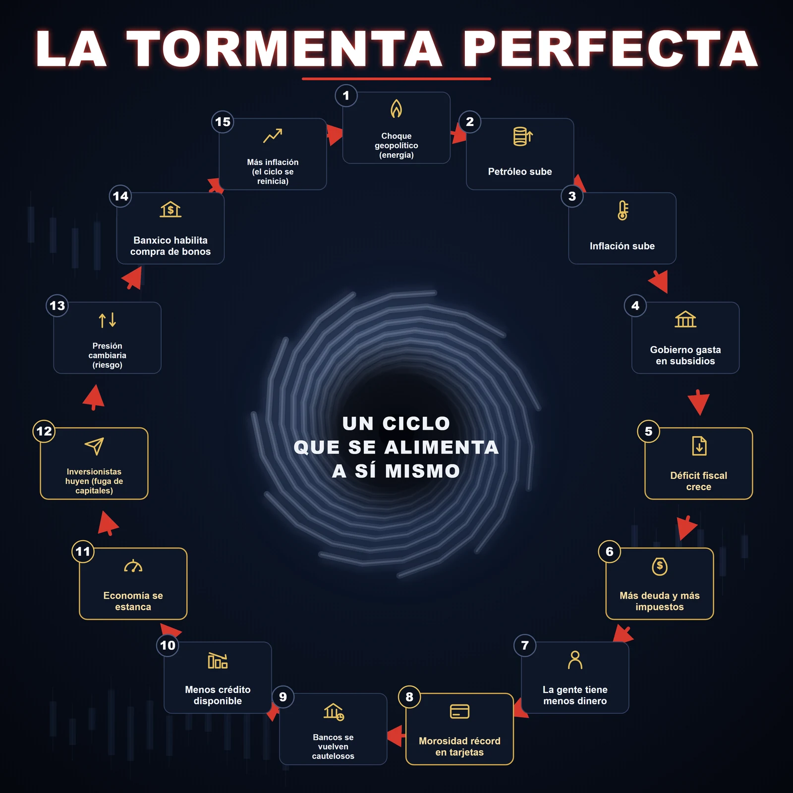

La tormenta perfecta no viene por donde truena
México no está en hiperinflación, pero se está configurando una tormenta perfecta. El déficit corre al +60%, la deuda ronda el 54% del PIB y Moody's bajó a Baa3; sin embargo el peso está fuerte y el petróleo a la baja tras la paz con Irán. El peligro real no es todavía monetario: es institucional y fiscal, entre la reforma judicial y el T-MEC. Venezuela como lista de cotejo, no como pronóstico.

Toda tormenta se dibuja antes de sentirse. El mapa que acompaña esta columna, quince eslabones en círculo bajo el título "La tormenta perfecta", es exactamente eso: un modelo de cómo una economía puede empezar a alimentarse de su propio deterioro hasta girar sola. Pero un mapa de riesgo solo sirve si uno se atreve a leer cuáles vientos soplan de verdad y cuáles amainaron. Con los datos sobre la mesa, no con la inercia del miedo.

Hay una parte del círculo que no admite discusión, y es la fiscal. En el primer trimestre de 2026 el déficit presupuestario del sector público llegó a 207 mil millones de pesos, 60.5 por ciento más en términos reales que un año antes, según la Secretaría de Hacienda. La deuda bruta del sector público federal ronda ya los 20 billones de pesos, cerca del 54 por ciento del producto. Sobre ese cuadro, Moody's recortó en mayo la calificación soberana a Baa3, el último escalón antes del grado especulativo, y lo hizo, en sus palabras, por un "debilitamiento sostenido de la solidez fiscal" agravado por el gasto rígido, una base de ingresos estrecha y el respaldo continuo a Pemex. La economía se contrajo 0.6 por ciento en ese trimestre y la morosidad de los créditos al consumo tocó un récord de 61 mil 695 millones de pesos en abril. Los eslabones fiscales del mapa están encendidos, documentados, sin atenuantes.
Otra parte del círculo, en cambio, se movió al revés de lo que se temía, y decirlo no debilita la tesis, la fortalece. El eslabón que abre la tormenta, el choque geopolítico que disparó el petróleo, se apagó: Estados Unidos e Irán firmaron en junio un acuerdo que reabrió el estrecho de Ormuz y el crudo se desplomó. La mezcla mexicana cerró junio por debajo de los 68 dólares, más barata que antes de la guerra. El peso, lejos de hundirse, se apreció, cotizando cerca de 17.40 por dólar mientras el Banco de México sostenía su tasa. Conviene una precisión que un mapa no alcanza a dar: que el petróleo baje alivia la inflación, cierto, pero aprieta al fisco, porque adelgaza el ingreso petrolero justo cuando el déficit corre. La tormenta no se disolvió, cambió de cuadrante.
La tormenta perfecta es real. Solo que no viene por donde truena.
Queda el eslabón más delicado, el de la emisión monetaria. El Banco de México habilitó, mediante su Circular 8/2026, la compra de Cetes y Bondes F en el mercado secundario, hasta por 100 mil millones de pesos a partir de agosto. Banxico insiste en que es una herramienta de liquidez y que con ella no financia al gobierno. Varios analistas coinciden; otros advierten que abre la puerta a una "monetización indirecta del déficit". La lectura honesta es que hoy los indicadores dan la razón al banco central: la tasa real es positiva, el monto es acotado y de doble vía, y la compra es en el secundario, no directa al Tesoro. No es una imprenta. Es la plomería de una imprenta, recién instalada.
Ahí aparece lo que el mapa, por sí solo, no entrega. En 1981 Thomas Sargent y Neil Wallace mostraron, con una célebre "aritmética monetarista desagradable", que cuando la política fiscal manda, el banco central termina, tarde o temprano, forzado a financiar el déficit. La secuencia no empieza en la imprenta, empieza en un gasto que no cede y una base de ingresos que se angosta. Por eso el motor de esta tormenta no es todavía monetario, es institucional. La reforma judicial y la nueva integración de la Corte introdujeron, en palabras de la propia Moody's, incertidumbre en el marco institucional que ya frena la inversión privada, y el país acumula una docena de arbitrajes internacionales ligados a esos cambios. A finales de junio, según Reuters, Estados Unidos se preparaba para no respaldar la prórroga del T-MEC, lo que activa la cláusula de extinción y abre una década de revisiones anuales rumbo a una posible expiración en 2036. Sin certeza jurídica el capital no se compromete; sin capital, el nearshoring se enfría; y sin esa base productiva, la aritmética de Sargent y Wallace deja de ser teoría.
Se ha invocado a Venezuela, y el paralelo es útil si se usa con oficio. Venezuela no cayó por un déficit, cayó por una secuencia: monetización directa y sin límite, captura del banco central, colapso de su única industria, controles y expropiaciones que espantaron al capital, y pérdida de acceso a los mercados. México comparte hoy, apenas, el primer eslabón institucional de esa cadena, y conserva justo los cortafuegos que a Venezuela le faltaron: tipo de cambio libre, tasa real positiva, economía diversificada y grado de inversión. Venezuela no es el pronóstico. Es la lista de cotejo.
Conviene, entonces, saber qué vigilar. La tormenta se volvería monetaria, y solo entonces, si el tope de compras de Banxico sube, si la tasa real se vuelve negativa, si esas compras dejan de ser de doble vía, si el peso rompe al alza de forma sostenida o si el país pierde el grado de inversión. Mientras esos vientos no cambien, el peligro es otro, más lento y más hondo: una economía que se queda sin margen fiscal y sin certeza jurídica al mismo tiempo.
La tormenta perfecta es real. Solo que no viene por donde truena.
- Déficit del primer trimestre de 2026 (207.3 mil millones de pesos, +60.5% real): IMCO, "Hacienda en la mira"
- Deuda pública cerca de 20 billones (53.9% del PIB): IMCO / SHCP
- Rebaja de Moody's a Baa3 y sus motivos: El Financiero, 20 de mayo de 2026
- PIB −0.6% en el primer trimestre (cifra final): El Financiero, 22 de mayo de 2026
- Morosidad de consumo récord (61,695 mdp, abril): La Jornada
- Acuerdo Estados Unidos–Irán y reapertura de Ormuz: Moncloa; mezcla mexicana al 29 de junio ($67.37): El Heraldo
- Tipo de cambio de junio (~17.4): DólarDOF
- Circular 8/2026 de Banxico (liquidez, no financia al gobierno): El Universal; debate sobre "monetización indirecta": Investing
- Reforma judicial e inversión (Moody's; arbitrajes internacionales): Forbes; Proceso
- T-MEC, Estados Unidos no respaldaría la prórroga (cláusula de extinción rumbo a 2036): La Jornada, 30 de junio de 2026
- Sargent, T. y Wallace, N. (1981), "Some Unpleasant Monetarist Arithmetic", Federal Reserve Bank of Minneapolis Quarterly Review; Acemoglu, D. y Robinson, J. (2012), Por qué fracasan los países.
Las ligas van a la vista para que cualquiera compruebe por su cuenta. Si alguna dejó de resolver, escríbenos y la reponemos.
SRVO